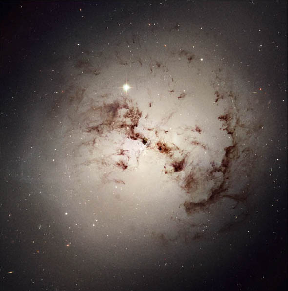
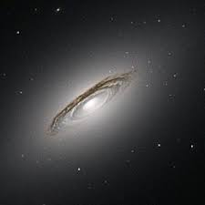
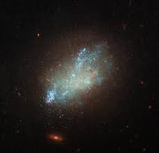
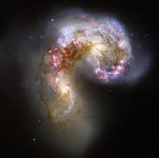

SPIRAL GALAXIES
Spiral galaxies are the ones with spiral outings/arms. It is one of the most beautiful and common type of galaxy. There are two most visible figures at the centre of the spiral galaxies which are the disk and the galactic bulge. The disk is flat and is surrounded by the spiral arms. Within the disk lies the galactic bulge, it is the central bright region which is the core of the galaxy and is composed of dim and old stars. Most of the spirals also have a halo (cluster) of stars positioned below and above the disk.
Additionally, the spiral arms contain gas and dust and are the formation regions for young stars.
Some spiral galaxies contain a blackhole at the centre and some contain a bright bars of stars cutting the centre/ the core are known as the barred spirals.
The subgroups of the spirals can be determined by the characteristics of their bulges, spiral arms and how tightly those arms are wound. Spirals that have bright bars are divided into two groups – barred spirals and normal spirals. The main difference between the two groups is that in barred spiral there are a lot of stars/ a bar of stars present in the central bulge.
The normal spirals were assigned various names in order to visualise how the particular galaxy looks like.
- To do so, letters from a – c were assigned to the normal spiral which determines the compactness of the spiral arms. The spiral arms in Sa spirals are tightly wound, whereas in Sc they are loosely wound.
The spiral arms in barred spirals are usually placed at the end of the bar of stars rather than from the central bulge unlike the normal spirals.
Barred spirals have a “B” in their classification. Therefore, a SBc spiral is a loosely wound barred spiral galaxy.
Examples of normal spirals and barred spiral galaxies:
1. M104 (The Sombrero Galaxy) – Sa
2. NGC 4565 (The Needle Galaxy) – Sb
3. NGC 891 (Silver Silver Galaxy) – Sc
4. NGC 1073 - SBC

ELLIPTICAL GALAXIES
Elliptical are the ones who appear like a glowing ball. These are egg shaped galaxies which are found in smaller compact groups and more in galaxy clusters.
Most of the stars present in them are old and of low mass as this galaxy lacks the cloud dust to make the star. Thus, less new star formation occurs.
Moreover, both giant and dwarf elliptical galaxies exist. A giant elliptical galaxy is formed due to a galaxy merger which is the collision of two galaxies or through the collapse of an interstellar gas cloud. Dwarf elliptical galaxies may also form from the manner listed above, but it is suggested that they are usually formed from the leftover collision of two galaxies or their tidal tails.
Additionally, the stars in this kind of galaxy are very close, making the centre look like one giant star.
Therefore, if Earth were in this galaxy then it would be bright in both day and night.
visualisation of an elliptical galaxy is determined by how elongated the circle is. The larger the number, the more elliptical it is.
For example, E0 is a perfect sphere, whereas, E7 is flat.
Examples of an elliptical galaxy:
1. E0 – virgo A (M 87)
2. E5 – NGC 4621
LENTICULAR GALAXIES
These are a mix of spiral and elliptical galaxies. They have long scale discs but short scale arms. These disc galaxies which have lost most of its interstellar matter and thus has a low new star formation. Therefore, they consist of ageing stars like elliptical galaxies and have a lot of dust.
IRREGULAR GALAXIES
They are irregular in shape and do not have enough structure to categorise them under spiral or elliptical galaxies. However, many irregular galaxies used to be either spiral or elliptical until they had an accident which changed their structure. They may show a bar structure in the centre and might have a high new star formation. Also, smaller irregular galaxies are known as dwarf irregulars.
PECULIAR GALAXIES
These type of galaxies do not fit into any description and are caused due to collision which distorts their shape. One example of this galaxy is Centaurus A.
